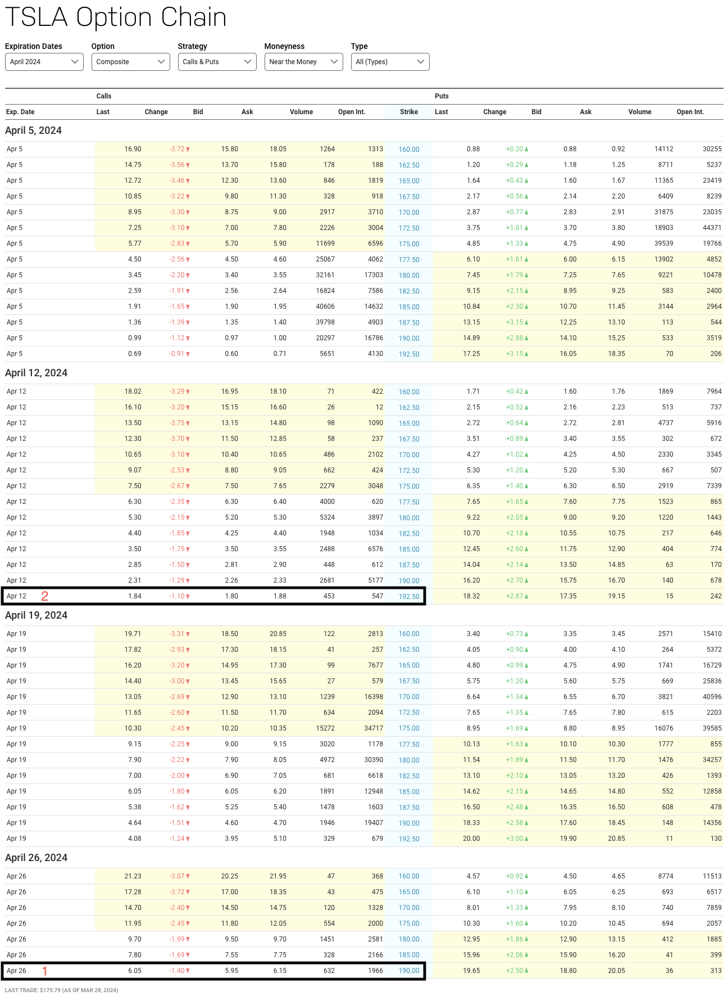

An Implementation of Optimizing Options Trading#
Introduction#
This is a continuation of a previous notebook titled on the theory of optimizing financial options. This notebook will cover the implementation details of optimizing financial options contracts using the scipy library.
Review#
The Black-Scholes PDE is given by:
Where:
\(C(S, t)\) is the price of the call option at time \(t\) given the price of the underlying asset is \(S\)
\(N(x)\) is the cumulative distribution function of the standard normal distribution
\(d_1 = \frac{1}{\sigma \sqrt{T-t}} \left[ \ln \left( \frac{S}{K} \right) + \left( r + \frac{\sigma^2}{2} \right) (T-t) \right]\)
\(d_2 = d_1 - \sigma \sqrt{T-t}\)
Optimizing black-scholes involves finding the price to buy an option at time \(t\) which maximizes the payoff. This can be written as:
The goal is to check if a given options contract is underpriced or overpriced in our current economic environment. This can be done by finding the optimal values of \(r\) and \(\sigma\) that minimize the difference between the theoretical price and the market price of the option. If there is a difference between the theoretical \(r\) and \(\sigma\) and the current \(r\) and \(\sigma\), then this tells us that the option is either underpriced or overpriced.
Implementation#
Assumptions#
There are many ways we can optimize the Black-Scholes model. For this implementation, we will make the following assumptions:
The volatility is uniformly distributed between 0.1 and 1
The interest rate parameter is uniformly distributed between 0.005 and 0.1
Objective Function#
Options pricing optimizing is a non-concave optimization problem. CVXPY is a convex optimization library, so it is not suitable for this problem. We will use SciPy optimization library to solve this problem. Therefore, we used SciPy optimization library, which is more powerful and flexible than CVXPY for this problem.
Due to the non-convex nature of this problem, SciPy uses Sequential Least SQuares Programming (SLSQP) to solve this problem. SLSQP iteratively approximates the objective function and constraints using quadratic models, aiming to minimize the model while satisfying constraints. It updates the solution until convergence, making it effective for nonlinear optimization problems where convex techniques may not apply.
Code#
import numpy as np
from scipy.stats import norm
from scipy.optimize import minimize
Below, we will implement the optimization of the Black-Scholes model, which takes the current price of the underlying asset, the strike price, the time to maturity, and the market price of the option as inputs. The black-scholes model will then return the theoretical price of the option. Our objective function takes the theoretical price of the option and the market price of the option as inputs and returns the squared difference between the two. We will then use the scipy.optimize.minimize function to find the optimal parameters that minimize the objective function.
def black_scholes(S, K, T, r, sigma):
d1 = (np.log(S / K) + (r + 0.5 * sigma ** 2) * T) / (sigma * np.sqrt(T))
d2 = d1 - sigma * np.sqrt(T)
option_price = S * norm.cdf(d1) - K * np.exp(-r * T) * norm.cdf(d2)
return option_price
def objective_function(params, S, K, T, market_price):
sigma, r = params
option_price = black_scholes(S, K, T, r, sigma)
return (option_price - market_price) ** 2
Usage#
Lets try this on actual options data. We will use the website https://www.nasdaq.com/market-activity/stocks/tsla/option-chain to get current options data for Tesla stock. Below is a screenshot of the data we will use from the website. The circled row is the option we will use as an example.

Below is the code which sets up the optimization problem and solves it. We first initialize a random guess for the \(r\) and \(\sigma\) parameters. We then set the constraints that \(r\) and \(\sigma\) to be within the range defined in our assumtions. We pass the inital guesses and our options contract data into the objective function and minimize.
def get_results(S, K, T, market_price):
np.random.seed(0)
constraints = [
{'type': 'ineq', 'fun': lambda params: params[0] - 0.1},
{'type': 'ineq', 'fun': lambda params: 1 - params[0]},
{'type': 'ineq', 'fun': lambda params: params[1] - 0.005},
{'type': 'ineq', 'fun': lambda params: 0.1 - params[1]}
]
initial_guess_lambda_sigma = 0.5
initial_guess_lambda_r = 0.04
initial_guess = [initial_guess_lambda_sigma, initial_guess_lambda_r]
result = minimize(objective_function, initial_guess, args=(S, K, T, market_price),
constraints=constraints)
if result.success:
optimal_lambda_sigma, optimal_lambda_r = result.x
print("Optimized rate parameter for sigma (lambda_sigma):", optimal_lambda_sigma)
print("Optimized rate parameter for interest rate (lambda_r):", optimal_lambda_r)
else:
print("Optimization failed:", result.message)
Case Study: Options Contract 1#
The first options contract, highlighted in the image above, has the following parameters:
Strike Price: $190
Time to Maturity: April 26, 2024 (~ 1/12 years)
Market Price of Call Option: $5.95 (this is the bid-price, which is the price at which the buyer is willing to buy the option at)
As of Fri. Mar 28, 2024, Tesla is trading at $175, so this is the price of the underlying asset
This contract states that the buyer has the right to buy Tesla stock at $190 on April 26, 2024. The buyer pays $5.95 for this right. If Tesla is trading above $190 on April 26, 2024, the buyer can exercise the option and make a profit. If Tesla is trading below $190, the buyer can let the option expire and lose the $5.95 paid for the option.
We plug that information into the optimization problem and solve it below.
S = 175
K = 190
T = 1/12
market_price = 5.95
get_results(S, K, T, market_price)
Optimized rate parameter for sigma (lambda_sigma): 0.5520447592581064
Optimized rate parameter for interest rate (lambda_r): 0.07925645706441156
From the above, we see that the optimal \(r\) and \(\sigma\) parameters are 0.08 and 0.55 respectively. This means that, based on our model, we should buy this option if the interest rate is 8.4% and the volatility is 57%. As of March. 2024, the US baseline interest rate is around 5%, so the model didn’t perform terribly, but to make this more realistics, we’d need better assumptions for the interest rate and volatility distributions.
Case Study: Options Contract 2#
The second options contract, highlighted in the image above, has the following parameters:
Strike Price: $192.50
Time to Maturity: April 19, 2024 (~ 1/24 years)
Market Price of Call Option: $1.84
As of Fri. Mar 28, 2024, Tesla is trading at $175, so this is the price of the underlying asset
We plug that information into the optimization problem and solve it below.
S = 175
K = 192.50
T = 1/24
market_price = 1.84
get_results(S, K, T, market_price)
Optimized rate parameter for sigma (lambda_sigma): 0.5021255518530079
Optimized rate parameter for interest rate (lambda_r): 0.04028925142128283
From the above, we see that the optimal \(r\) and \(\sigma\) parameters are 0.04 and 0.50 respectively. This means that, based on our model, we should buy this option if the interest rate is 4.0% and the volatility is 50%.
Conclusion#
In this report, we implemented a method to optimize financial options contracts using the Black-Scholes model and the scipy library. By comparing theoretical option prices with market prices, we assessed whether options were underpriced or overpriced in the current market. Our implementation utilized the scipy.optimize.minimize function with constraints on interest rates and volatilities. Through case studies on Tesla options contracts, we demonstrated the effectiveness of our approach. While our method provides a practical framework for option pricing, further refinements are needed to enhance its accuracy and realism, particularly in incorporating more nuanced assumptions for market parameters.